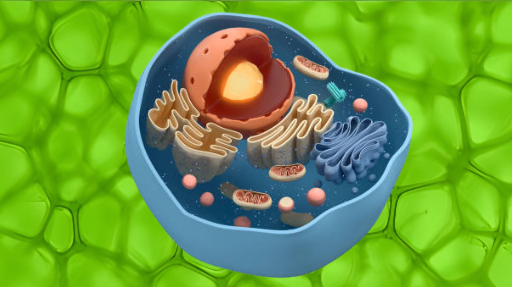

Célula Animal
ㅤA célula animal é uma célula eucarionte encontrada nos organismos do reino Animalia. Como todas as
células eucariontes, ela possui um núcleo definido e organelas celulares, como complexo golgiense,
mitocôndrias e lisossomos. "Algumas organelas permitem diferenciar uma célula animal de uma célula
vegetal. Na célula animal, destacam-se a presença de lisossomos e a ausência de parede celular,
plastídios e vacúolo central ou de suco celular."
ㅤA célula animal pode ser considerada parecida com a celula vegetal, quando nos referimos ao aspecto
estrutural e funcional, ou seja, existem diversos membros da composição interna que se assemelham
bastante quando comparamos uma célula e outra. Além disso, os mecanismos responsáveis pela
produção de diversas moléculas, como proteínas, DNA entre outros, são basicamente os mesmos.
Entretanto, existem diferenças cruciais entre os grupos existentes.
ㅤEmbora ambas sejam células eucarióticas, existem algumas diferenças, entre a célula animal e a célula
vegetal. Com relação à região externa da membrana plasmática, não há a presença de uma parede
celular, nas células animais, como ocorre nas vegetais. O que frequentemente é encontrado nessa área é
o Glicocálix. Essa estrutura se trata de um envoltório associado externamente à membrana plasmática
que confere certa resistência sem tornar a estrutura rígida. Além disso, o glicocálix fornece capacidade de
reconhecimento celular, barrar agentes do meio externo e reter moléculas de importância para célula,
como nutrientes.
ㅤ Com relação à parte interna da membrana plasmática é possível citar outros pontos que diferenciam os
grupos. Nos seres vegetais existem plastídeos pigmentados responsáveis pela fotossíntese denominadas
cloroplastos. Diferentemente dessas, as células animais não possuem plastos ou plastídios. Isso se mostra
bastante razoável uma vez que os animais são seres heterótroficos e não autótrofos. Outra diferença
interna reside nos vacúolos citoplasmáticos. Ambos os grupos têm essa estrutura, entretanto nas células
animais elas se apresentam com o tamanho muito inferior às das vegetais.
ㅤ Além das citadas, podem ser mencionadas outras divergências na configuração. As células, de maneira
geral, têm a capacidade de realizar uma reserva de energia na forma de algum açúcar complexo. No caso
dos animais, esse polissacarídeos é o glicogêneo, enquanto nas vegetais a forma que ele se apresenta é o
amido. Também no sentido de existirem duas estruturas diferentes para exercer a mesma função, em
ambos os grupos existe o trânsito de moléculas por algum tipo de conexão entre as células justapostas.
Nas células animais, essas estruturas se chamam junções comunicantes e nas vegetais plasmodesmos.
Curiosidades
Vamos explorar a seguir partes importantes da célula
ㅤA célula animal apresenta membrana plasmática e citoplasma, assim como todos os outros tipos celulares.
Por ser uma célula eucarionte, ela apresenta também um núcleo definido e as organelas celulares, sendo,
portanto, uma célula de grande complexidade quando comparada à células procariontes.
ㅤA membrana plasmática apresenta-se como uma bicamada fosfolipídica na qual se encontram proteínas
associadas. Essas proteínas apresentam diversas funções, como formar canais pelos quais algumas
substâncias penetram na célula. A membrana plasmática garante a separação entre meio extracelular e
meio intracelular e atua no controle do que entra e sai da célula, uma propriedade conhecida como
permeabilidade seletiva.
ㅤEntre a membrana plasmática e o núcleo da célula animal está o citoplasma. Nessa região observamos a
presença das organelas citoplasmáticas e do chamado citoesqueleto. Este último é constituído por
proteínas que formam uma espécie de rede. O citoesqueleto está relacionado, entre outras funções, com
a movimentação da célula, a mobilidade das organelas e o processo de divisão celular. A parte do
citoplasma que não é dividida por membranas é chamada de citosol e consiste num material de
consistência gelatinosa formado por água e substâncias dissolvidas.
ㅤO núcleo é onde está a maior parte da informação genética da célula (mitocôndrias também apresentam
DNA e RNA), sendo o DNA responsável por controlar toda a atividade celular. O núcleo também é
responsável pela síntese e processamento de todos os tipos de RNA. Na região denominada nucléolo, as
unidades ribossomais são formadas. A carioteca (ou envoltório nuclear) reveste o núcleo, é formada por
duas membranas e garante a separação entre conteúdo intranuclear e citoplasma.